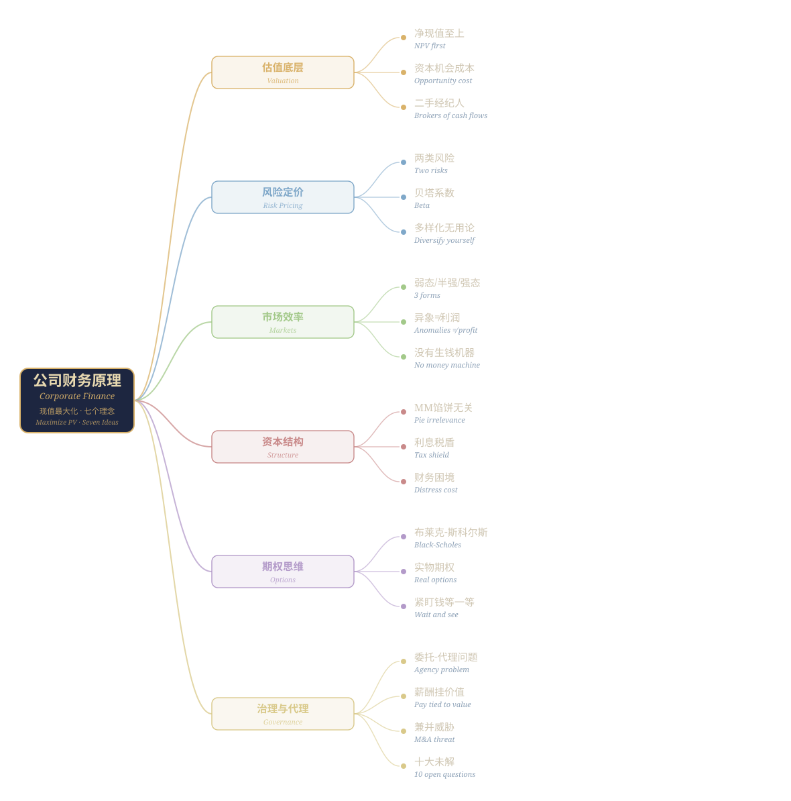

公司财务原理
〇 · 书籍信息
基本信息
| 书名 | 《公司财务原理》（Principles of Corporate Finance）——全球 MBA 公司财务课程的标杆教材，第 10 版共 34 章 11 个部分 |
|---|---|
| 作者 | 布雷利（伦敦商学院）、迈尔斯（MIT 斯隆）、艾伦（沃顿）——三巨头组合：学术严谨与实务操作的双保险 |
| 结构 | 价值理论 → 风险 → 资本预算 → 融资与市场 → 红利与资本结构 → 期权 → 风险管理 → 财务分析 → 兼并治理 → 世界治理 → 结论——从一张现值公式出发，走到公司全部的钱 |
| 体裁 | 教科书：但这本的特殊之处是第 34 章——作者亲自总结「我们所知：7 个最重要的金融理念」与「我们未知：10 大未解问题」——一本教材敢承认自己学科的无知清单，是罕见的诚实 |
| 一句话 | 全书最后压缩成一句话：现值最大化——成千上万财富与偏好迥异的股东，只把一个简单的目标委托给职业经理人。 |
一 · 核心主题总览
一本教材的骨架里站着四个母题：① 净现值至上
「如果想知道未来现金流的价值，我们就该去观察资本市场中的报价」——NPV 法则把投资判断还原为市场比较。它让成千上万偏好迥异的股东可以共存于一家公司：大家只要求一个目标——现值最大化。
② 唯一要防的风险
风险分两类：可分散的与不可分散的。「人们需要关心的唯一风险就是无法避免的风险」——多样化是股东自己就能完成的动作，公司代劳毫无价值。
③ 市场的残酷效率
有效市场的本义不是完美，是竞争：「市场中不存在生钱机器或套利机会」——四十年实证找出数十种异象，却没有一种变成轻松获利的交易方法。
④ 馅饼与刀工
MM 定理的民间版：「一张馅饼的价值与如何切割无关」——融资决策本身不创造价值；真正动馅饼的是税盾、财务困境与激励。
二 · 第一段 估值的底层—— 现值 · 机会成本 · 二手经纪人 ——
财务经理的两个问题
开篇即立骨架：公司要回答两个问题——投资什么（花钱）与钱从哪来（筹资）。价值主要来源于资产一边：微软市值 1730 亿美元，融资策略却简单到不借任何债务，几乎全部靠留存收益与现金流再投资。作者用《芝加哥论坛报》做反面教材：80 亿美元负债在广告收入锐减时变成致命伤——2008 年申请破产时资产 76 亿、负债 129 亿：融资决策不创造价值，但可以摧毁价值。
◆ 语言学习 · 概念 · 估值地基
| 净现值 NPV | 项目未来现金流现值减去投资成本——接受的唯一标准：NPV 为正 |
|---|---|
| 资本机会成本 | 股东在金融市场同等风险投资的期望收益率——贴现率的真实身份 |
| 资本预算 | 资本投资决策：从沃尔玛的存货到波音 100 亿美元的梦想客机 |
| 资本结构 | 负债与股权的配比——融资决策的核心变量 |
句型 ｜ 「当公司可以获得比股东自己投资更高的收益时，财务经理就有存在的价值了。」——职业价值的定义句：财务经理存在的唯一理由，是替股东做到他们自己做不到的事。
二手经纪人
第 34 章对 NPV 的还原最有名：「那些拿高薪的投资银行家不过是现金流的二手经纪人」——未来现金流的索取权在资本市场有报价，项目的价值就是把这些索取权分开出售时的价值。估值不是玄学，是搬运市场报价。
◆ 语言学习 · 概念 · NPV 还原
| 现金流索取权 | 对未来现金的求偿凭证——债券与股票都是它的不同包装 |
|---|---|
| 贴现因子 | 一元未来现金今天的身价：期限越长、风险越高，身价越低 |
| 一价律 | 同样商品在功能完善的市场应同价——即期利率体系的公理 |
| 门槛收益率 | 最低可接受的收益率：低于它的项目一律否决 |
句型 ｜ 「同大多数有意义的理念一样，净现值法则『想想是很清楚自然的事情』。」——作者的自谦式辩护：最好的理论听起来都像常识，难的不是理解，是不折不扣地执行。
三 · 第二段 风险的定价—— 贝塔 · 多样化 · 可加性 ——
两类风险
资本资产定价模型的核心一句话：风险有两种——可以靠多样化分散的，与无法分散的；市场只为后者付钱。贝塔系数衡量项目随整体经济波动的幅度：要求的收益率随贝塔同步增长。作者对模型的诚实：即使 CAPM 从未被提出，对财务经理的忠告在本质上也完全相同——它的价值在「可分散与不可分散」这个区分本身，公式只是方便的近似。
◆ 语言学习 · 概念 · 风险
| 贝塔系数 | 资产收益率对市场收益率的敏感度——不可分散风险的度量 |
|---|---|
| 市场组合 | 包含全部可投资资产的组合——多样化的逻辑终点 |
| 价值可加性 | 总体价值等于部分之和：PV(AB)=PV(A)+PV(B)——价值守恒定律 |
| 多样化 | 把互不相关的风险装进同一个篮子，方差相互抵消 |
句型 ｜ 「多样化并不影响公司的价值，公司的现值依然不受影响。」——反直觉的判词：股东一秒钟就能自己完成的事，公司没有资格收费。
守恒定律
价值可加性做加法成立，做减法同样成立：仅仅把营运现金流分解成不同证券，总价值不变——这是 MM 第一定理：完善市场中资本结构的改变不影响公司价值。馅饼的比喻由此而来：切割方式不改变馅饼大小。但作者随即补刀：MM 不是万能钥匙，税盾、财务困境、激励——这些「切割的摩擦」才是资本结构决策真正要权衡的东西。
◆ 语言学习 · 概念 · 资本结构
| MM 第一定理 | 完善市场中资本结构无关论——馅饼价值与切割无关 |
|---|---|
| 利息税盾 | 负债利息抵税产生的价值增量——负债的真实好处 |
| 财务困境成本 | 过度负债走向破产的代价：直接成本与间接成本的总和 |
| 代理成本 | 管理者谋私利造成的价值损失——治理制度要对付的东西 |
习语 ｜ 「一张馅饼的价值与如何切割无关」——金融学最著名的食物比喻；「负债有益，但过多则可能导致公司破产」——教科书式的中庸句，背后是无数破产案例。
四 · 第三段 市场与期权—— 有效市场 · 泡沫 · 生钱机器 ——
有效市场及其异象
有效市场三形式：弱态（价格含全部历史信息）、半强态（含全部公开信息）、强态（含全部可得信息）。作者的双重诚实：支持证据相当丰富，异象也在累积——但四十年研究没有产出一种轻松获利的方法；「统计学家能跑赢市场，但实际投资者却要困难得多」。泡沫另案处理：最理性的人也容易传染，尤其当他们用的是别人的钱。
◆ 语言学习 · 概念 · 市场
| 弱态有效 | 价格已包含全部历史价格信息——技术分析失效的表述 |
|---|---|
| 半强态有效 | 价格已包含全部公开信息——基本面分析的超额收益归零 |
| 异象 | 统计显著但无法变成利润的规律——有效市场理论的绊脚石 |
| 随机步态 | 股价路径如醉汉行走：下一走无法预测 |
句型 ｜ 「有效市场理论只是说明，资本市场竞争激烈残酷——市场中不存在生钱机器或套利机会。」——把「有效」从道德词还原为竞争词：市场的有效，是猎手太多导致猎物绝迹。
期权与实物期权
期权理念的日常版：「精明的经理知道，想获得明天买入或卖出某种资产的选择权，今天为此有所付出是值得的」——布莱克-斯科尔斯公式给了简单期权一个可用的定价式，而公司财务里到处是实物期权：延迟投资、扩张、放弃、择时。NPV 为正的项目有时也该等一等——「紧盯钱」的项目最好等等看。
◆ 语言学习 · 概念 · 期权
| 看涨/看跌期权 | 买入权利/卖出权利——两种基本选择权 |
|---|---|
| 行权价格 | 未来按今天约定成交的价格——期权的锚 |
| 实物期权 | 把管理弹性（延迟/扩张/放弃）当期权估值——资本预算的补丁 |
| 风险中性定价 | 布莱克-斯科尔斯公式的暗含方法：公式不适用时思想仍有用 |
习语 ｜ 「深度价内」与「紧盯钱」——期权语言进入资本预算：一个项目是否值得等待，取决于它离行权价多远。
五 · 第四段 代理与总结—— 七个理念 · 十大未解 · 馅饼归宿 ——
代理问题
「管理者并非天赋具有特殊的价值最大化基因」——所有权与经营权分离后，委托-代理问题随之而来：董事会、股票期权、兼并威胁是三件常规武器。股东的不满也可以直接用脚投票：卖出股票本身就是信号，股价下跌直接打在高管薪酬上——利益被制度性地拴在一起。
◆ 语言学习 · 概念 · 治理
| 委托-代理问题 | 委托人与代理人目标不一致带来的冲突——现代公司的原生病 |
|---|---|
| 公司治理 | 调和经理与股东利益的制度总和：董事会、激励、并购市场 |
| 激励相容 | 让代理人为委托人的目标努力时也实现自身利益 |
| 恶意并购 | 治理的最后武器：换掉整个管理团队 |
句型 ｜ 「为了鼓励经理人全力以赴，企业试图将经理人的报酬与企业增加的价值挂起钩来。」——激励设计的一句话纲领：钩子挂在哪里，行为就长在哪里。
七个理念与十大未解
第 34 章是全书的心脏：所知七理念——NPV、CAPM、有效市场、价值可加性、资本结构理论、期权理论、代理理论；未知十问题——从「项目风险与现值的决定因素」到「如何解决股利之争」。作者的自问自答令人莞尔：「上述 7 种理念是令人激动的理论模式还是一些普通的常识呢？说什么都可以，但它们是财务经理工作的基础。」
◆ 语言学习 · 总结 · 清单
| 七个理念 | NPV/CAPM/有效市场/价值可加性/MM/期权/代理——公司财务的公理体系 |
|---|---|
| 十大未解 | 风险决定因素、泡沫、异象、股利之争……学科的无知清单 |
| 现值最大化 | 股东委托给经理人的唯一目标——全书的一句话结论 |
| 公平客观 | 作者的写作自许：「尽力持公平客观的态度，但也会畅所欲言」 |
习语 ｜ 「想想是很清楚自然的事情」——作者引用的口语化判词：公理的标志不是深奥，是不证自明。
六 · 人物图鉴与成长弧线—— 主角配角 · 一张表看穿 ——
主要人物
净现值 NPV——全书的主角：接受净现值为正的投资——一条准则统摄 34 章，从二手车市场到梦想客机
资本机会成本——贴现率的真身：股东在市场里同等风险投资的期望收益——它设定了公司一切投资及格线
贝塔与 CAPM——不可分散风险的度量与定价：公式可以过时，可分散/不可分散的区分是学科的地基
MM 定理——馅饼无关论：融资不创造价值——但税盾、困境、激励让「切割」有了利害
次要人物（功能位）
| 波音梦想客机 | 开篇案例：100 亿美元投资、30 年收益期——长期投资的时间风险标本 |
|---|---|
| 《芝加哥论坛报》 | 融资毁掉价值的样本：80 亿负债 + 广告锐减 = 破产——杠杆是放大器，坏年景里放大的是死亡 |
| 微软 | 简单融资策略的正面样本：不借债、靠留存收益——价值来自资产一边的最好注脚 |
| 拉里·埃利森 | 薪酬案例：6000 万美元年薪里 100 万是底薪——代理问题的解法标本：把老板变成股东 |
七 · 主题与象征—— 每个道具都在说话 ——
| 馅饼 ↔ 公司价值 | 切割方式不改变大小：MM 无关论的通俗化身 |
|---|---|
| 二手经纪人 ↔ 投资银行家 | 现金流的搬运工：估值的去魅修辞——市场报价是唯一的锚 |
| 生钱机器 ↔ 套利 | 永远不存在：有效市场的猎手密度保证 |
| 期权 ↔ 管理弹性 | 延迟、扩张、放弃：资本预算里的隐藏资产 |
| 钩子 ↔ 激励 | 报酬挂价值：行为跟着激励的锚走 |
八 · 写作手法赏析—— 怎么写，就能怎么学 ——
① 案例开路
每章以真实公司开场：沃尔玛的存货、波音的客机、论坛报的破产——教科书拒绝真空推理
② 正反对照
每介绍一准则就给反例：回收期法、IRR、账面收益率逐一过堂——批判性是本书的肌肉
③ 所知/未知对账
末章把学科摊开成两列清单：教材罕见的智力诚实——知道自己不知道什么
④ 通俗比喻
馅饼、生钱机器、二手经纪人：把数学包进比喻， 让公式可被转述
九 · 名段欣赏—— 原文精读 · 逐段赏析 ——
十 · 金句摘录—— 14 条 · 中英对照 · 带出处 ——
"当公司可以获得比股东自己投资更高的收益时，财务经理就有存在的价值了。"—— 第1章
"经营企业天生就与风险相伴。"—— 第1章
"价值主要来源于资产负债表中的资产一边。"—— 第1章
"多样化并不影响公司的价值。"—— 第7章
"市场中不存在生钱机器或套利机会。"—— 第34章
"统计学家能跑赢市场，但实际投资者却要困难得多。"—— 第34章
"仅仅为了多元化而进行的兼并没有任何价值增益。"—— 第34章
"一张馅饼的价值与如何切割无关。"—— 第34章
"负债也有缺陷，因为它可能造成代价高昂的财务困境。"—— 第34章
"精明的经理知道，想获得明天买入或卖出某种资产的选择权，今天为此有所付出是值得的。"—— 第34章
"管理者并非天赋具有特殊的价值最大化基因。"—— 第1章
"净现值法则「想想是很清楚自然的事情」。"—— 第34章
"人们需要关心的唯一风险就是无法避免的风险——不能分散的风险。"—— 第34章
"良好的治理制度、合理的激励管理制度、合理的资本结构和有效的风险管理。"—— 前言
十一 · 拓展阅读—— 原文 · 词条 · 译文 ——
十二 · 个人感悟与心得—— 三点心得 ——
三点感悟
① 公理只有七条
34 章千页，最后收敛成七条理念——学科的成熟不在于理论的数量，而在于公理的稀少。对任何从业者，这七条背下来就是完整的职业操作系统。
② 融资是余氯
价值来自资产一边；融资做对了不加分，做错了致命。论坛报的破产与微软的零负债互为镜像：财务的功夫一半在防毁，不在创富。
③ 承认未知
十大未解问题清单是全书最珍贵的部分：知道学科的边界，才不会把假设当定理——有效市场、贝塔、期权定价都有适用域，越界的公式比无知更危险。
一句话带走全书：把未来的钱按风险折到今天，是唯一值得练习一辈子的动作。
十三 · 一页速查（复习用）
| NPV 法则 | 接受净现值为正的项目——贴现率=资本机会成本 |
|---|---|
| 风险二分 | 可分散风险市场不给钱，贝塔（不可分散）才定价 |
| 有效市场 | 竞争消灭套利：异象≠利润，统计显著≠能下单 |
| MM 定理 | 馅饼与切割无关：资本结构本身不创造价值 |
| 期权与代理 | 管理弹性是资产；激励挂在价值上，行为长在钩子上 |
十四 · 全书思维导图—— 一图纵览 ——

一图纵览全书骨架 · 中英双语对照 · 手机端可左右滑动查看全图